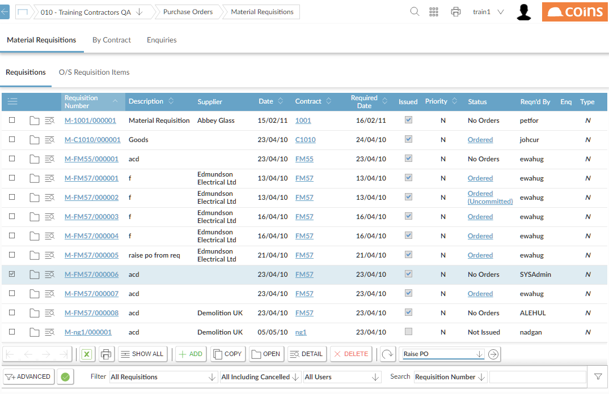
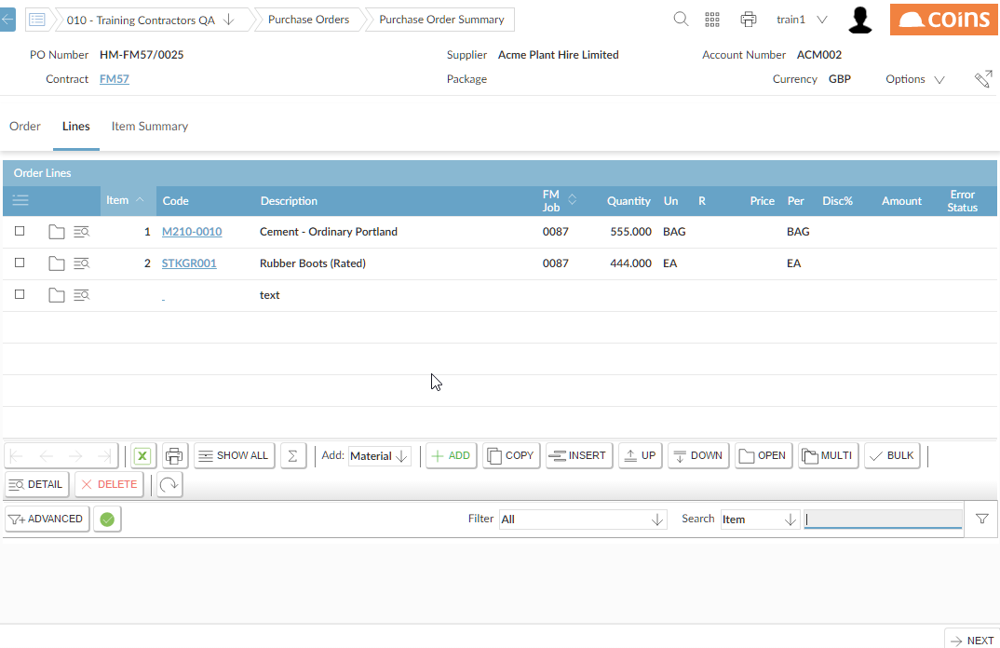
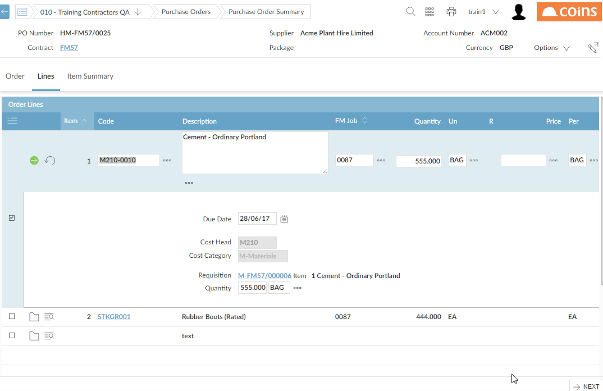

Converting a Requisition Header to a PO
From the Requisitions tab, you will see a list of all Requisitions.
NOTE
You can filter to see Unordered Requisitions.

 ).
).
This takes you to an Order Header screen. Some of the details are brought across from the Requisition (eg

Clicking  will auto-generate the PO number (if auto-generating), and will create PO Lines, from the unordered Requisition lines. It will then take you onto the PO Summary, where the newly created PO lines can be updated.
will auto-generate the PO number (if auto-generating), and will create PO Lines, from the unordered Requisition lines. It will then take you onto the PO Summary, where the newly created PO lines can be updated.
In the PO Summary, go to the Lines tab to update these new PO lines:

NOTES
- The Price is brought across from the Requisition line if the PO parameter PRPRTOPO is set to Y.
- Text lines will also be brought across from the Requisition, if the PO parameter PORQTXT is set to Y.
The Quantity of a line can be amended on the Purchase Order, although it cannot be changed to a quantity greater that the quantity on the Requisition.
If the Quantity is reduced from 10 to 6, say, a quantity of 4 will now be outstanding, and will appear on the Outstanding Requisition Items tab, and will be available to be ordered.

NOTE
- Deleting a PO line that has been created from a Requisition, will mean that the Requisition Item is now unordered, and will be available again to be re-ordered.
- When updating these item details, it is possible to update the original Requisition Line's Quantity and Units. This would be necessary for tracking purposes, for example, if a quantity of "20 NO" was Requisitioned, but the item could only be ordered in boxes of 20, if the purchase order was changed to "1 BOX" without changing the original requisition details, coins would consider the requisition to have an outstanding quantity of 19.